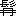

銀座の裏通りに、和洋
何れともつかぬ
せゝこましい二階家がある。壁の柱も汚れて、外から見ると寢ぼけてゐるやうに見える。二階は通信社で、
階下は鞄屋。鞄屋は小さいながら
老舖で中々繁盛してゐる。通信社は創業まだ日淺く、萬事整頓しないが、活氣は充滿してゐる。社員凡て十數人。
毎日十二時近くなると、細い谷のやうな所の危かしい
階子段に、靴や下駄の音が騷々しく續く。その音の加減で、誰れだ彼れだと、給仕の耳にも
ちやんと區別がつく。何時も急用ありげに、チヨカ／＼と驅け上るのは坂本さん。ドシン／＼と踏み占めて泰然として入つて來るのは安田さん。
閑雅なのは荒野さん。
雪踏をちやらつかせるのは村松さん。
そして一月ほど前に入社した塚野
鞠太郎は、何時も階子段の壁に添うて、コツソリ音をも立てず上つて來る。
服裝は常にフロツクコートに高帽で、
襟飾や
飾針にも、
一寸好みを見せてゐる。丈高く色白く、
口
も美事に生え、美事に手入れをされてゐるが、惜しいことには、下唇が反りかへつて、片端が少し曲り、
稍もすれば齒莖が
顯れる。で、彼れは笑ふにも物を云ふにも、絶えずそれが氣になつてならぬらしく、
強いて口を
窄めたり、
矢鱈に
絹手巾で口の
邊を
蔽うたりするのが癖になつてゐる。しかしそのために自分が醜い男であるとは思つてゐないらしい。で、時々は近所の鳥屋などへ行つて、女中共に樣子を見せたり、若い女のある家庭へも、何かにつけて出入して愛嬌を賣つてゐるが、そんな折は
大抵一人であつて、
偶に
他人と一緒に行かうなら、詰らなさゝうな顏をして口數も少ない。社の者をも殊に
憚つて避けてゐるが、或る日鳥屋で
爪楊子をつかひながら、
柔しい聲で、女中と
洒落競べをやつてる所を、同僚の安田に見つけられて、
うんと油を取られたことがある。この安田と云ふ奴、口ばかり達者な意地くね惡い男で、どうかすると、ストーブ會議の話の種に、塚野を槍玉に擧げるが、そんな時、この連中に誰れ一人、
同情のある者のあらうことか、一人が云ひ出せば、皆ぞろ／″＼と附和雷同して、無殘な批評を下す。塚野の口曲りは山口のチビと並んで、仲間内の
愚弄の中心で、名を呼ぶ代りに、口を歪めて指さしては、「これがかうした、あゝした。」と云ふ。給仕までも
ちやんと心得て、口曲りさんで通つてゐる。そしてチビの山口は、何と云はれても平氣で、始終
微笑顏で、大勢の中に立ち交つて、
氣焔を吐いてゐるが、塚野はさうでない。
彼れは滅多にストーブには近寄らず、空いた机でコソ／＼原稿を書いて、用事が濟めば直ぐに出て行く。何かの都合で社に居ると、窓際の空地を歩いたり、或ひは人氣ない所に直立して、手を組み合せて前に垂れ、ボンヤリ空間を見てゐる。そしてストーブの側で無駄口を叩いてる安田などが不意に「塚野君」と聲を掛けると、胸をドキツカせて、驚いて振り返る。「又おれを冷かすんぢやなからうか。」と、目は
自から
外れて、容易に
傍へ寄つかれぬ。階子段を上りながらも、室内から笑ひ聲が聞えると、思はず立ち留まつて、「又おれの事か。」と、おど／″＼してソツと入つて來る。新入の社員までが、二三日すると、もう自分を馬鹿にするやうな素振を見せる。と、彼れは思つてゐる。
世間へ出れば、人並外れた侮辱を受けることは
甞てないのに、社にゐる間は、上は社長より下は給仕にまで、自分は馬鹿にされねばならぬ。社長の
命令振りも自分にのみは、
粗末で壓制的で、
斟酌がない。給仕も自分の用事は敏活に便じて呉れない。
と、彼れは見るにつけ、聞くにつけ、不愉快でならなかつた。日に／＼肩身が狹くなるやうだ。が、しかし、思ひ切つて皆んなと一緒になつて、騷ぐことも出來ねば、彼等の
冷語に一矢相
酬ゆることも出來ぬ。
或る日、例の通りソツと二階へ入ると、その顏を見つけた社長が、直ぐに「君ちよつと。」と呼びつけて、
「どうも君はぐづ／＼してゝ困る、もつと敏活にならなくちやこの商賣は勤まらんよ。君の議會の筆記は遺漏だらけで評判が惡い。」と、疊みかけて責めた。
塚野は顏を赤くして、只「ハイ／＼。」と
畏まつて聞いて、頭をビヨコつかせるばかり。自分は
駄法螺は吹かぬが、仕事は忠實にやつてゐる、安田や村松のやうに
狡猾いことはしないつもりだが、全體何處が惡いんだらう、何處に手落ちがあつたんだらう、ハツキリ云つて貰ひたい。辯解しよう、と腹では思つてゐたが、さてそれを一言も口に出し得ない。我ながら無念でならぬ。
そして彼れは、獨り戸を開けて、物干場へ出た。此處は今は不用の場所であつて、時折社員が
祕密話をしに來るぐらゐに過ぎぬが、塚野にはよい隱れ場だ。
この日は空が晴れ風がなくて、
戸外も温かい。隣りの白壁にからんだ
疎らな
蔦の葉は赤らんで、照りつける光に、哀れげに震へてゐるやうに見える。見下ろすと狹い濕つた空地に、島田の女が後ろ向きで洗濯をしてゐる。塚野は戸一重隔つて部屋の騷ぎを
他所に、
暫らく物干場をうろ／＼してゐたが、社長の無情の言葉が容易に消え失せぬ。同僚の侮辱も今日は際立つて頭に浮ぶ。
そして、「おれも男だから、どうかしなくちやならん、名譽を回復しなくちやならん。」と、その方法を考へてゐる所へ、坂本が戸口から顏を出して、「おい塚野君、何をしてるんだ、用事があるんだから、早く來て呉れ。」と、早口に
喋舌つた。
塚野は考へに沈んでた頭をひよいと
持上げて、「何の用かね。」と
吃るやうに答へて、氣取つた足取りで部屋へ入つたが、坂本は前に立つて、目に冷笑を浮べて、彼れの顏をジロジロ眺め、
「本當に君は間拔けだねえ。
涎が
襟に垂れてるぢやないか、口の端にも
唾を溜めて、何て汚い奴だらう。」と、さも
卑下だ口振で云つた。
塚野はゾツと身震ひして、思はず手を口に當てた。室内一人殘らず振り向いて、ドツと笑ふ。
彼れは横へ向いて
首垂れた。そしてポツケツトから、香水の匂ひを籠めた
絹手巾を取り出して、涎を拭ひながら、考へてゐたが、フイと向き直る
機會に、手巾を持つた手で、坂本の頬を打つた。
「失敬ぢやないか、君は。」と叫んだ。
「
突如にひどい事をしやがる。」と、坂本は苦笑したが、
敢へて爭はうともしなかつた。彼れは仲間内で一番弱々しい男であつて、塚野もちやんとそれを心得てゐるのである。
この一撃で、室内の温良なる人々は笑ひを潛めたが、安田村松等亂を好む連中は、面白さうに笑つて、
「塚野君、しつかりやり玉へ、男子が侮辱されて
へこんぢや駄目だよ。」
と、
煽動てたが、爭ひはそれきりで、
厭氣なく終つた。
そして塚野はイソ／＼と用事を濟ませて、社を出たが、歸る道々、家に着いてからも、勝利と不安の念に惱まされた。自分が意氣地なしでないことは、これで誰れにも分つたであらうが、さて坂本の思惑が氣にならぬでもない。
で、彼れは獨りで思ひ
倦んで、その晩、わざ／＼遠方の山口の家を訪ねた。
生憎不在であつたのを、是非會ひたいと、遲くまで待つてゐて、その歸るを見ると、
「君は今日の僕の行爲をどう思ふ。」と、
打付けに問うた。
「ヤハヽヽヽ。」と、山口は小さい
身體を反らして笑つて、「君としては大出來々々々。」と云ふ。
塚野は胸の
凝りの融けた心地して、「ねえ君、當然だらう。侮辱されりや反抗しなくちやならんさ。僕はこれから誰れに對しても、自分の權利は主張するつもりだ。君なんか何を云はれても默つて我慢してゐるからいかんよ、だからます／＼馬鹿にされるんだ。」
「ヤハヽヽヽ、君に忠告されるんかね。だがまあ、馬鹿にする奴がありや、勝手にさせとくさ。」
「そりやいかんよ、あの安田なんか、口ばかり強さうでも、實際は極く弱いんだからね、恐るゝに足らんよ。」
と、塚野は得意になつて歸つた。
で、翌日は早くから出勤し、ドシン／＼と威勢よく階子段を上り、ストーブへも遠慮なく近よつた。もう今日から、社内に口曲りの
綽名の跡を絶つであらうと確信して、悠然煙草を吸うてゐたが、ふと氣づいて見ると、前の壁に薄い鉛筆繪がある。口の曲つた男がフロツクコートに大きな涎掛けを掛けてゐる。
彼れは目を見張り、口を開けたまゝ、暫らく身動きもしなかつた。
クス／＼笑ひが後ろの方で始まつてゐる。